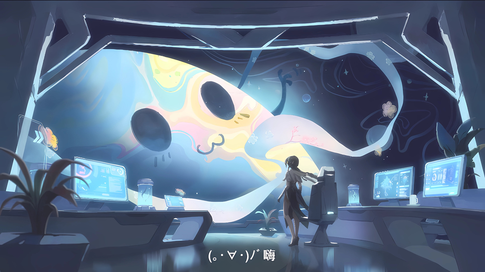

Ruan Mei
, a lesser-known yet captivating character from HoYoverse's Honkai: Star
Rail, has garnered a loyal following among fans who appreciate her enigmatic presence and deep lore
connections. As one of the members of the Genius Society, a group of eccentric intellectuals with profound
influence across the universe, Ruan Mei's character encapsulates a blend of scientific brilliance,
understated charm, and a touch of mysticism. This essay delves into her role in the game's narrative, her
thematic significance, and her impact on the broader lore of Honkai: Star Rail.
FACTS ABOUT RUAN MEI |
The Enigmatic Persona of Ruan MeiRuan Mei’s character design and backstory reflect a fusion of elegance and intellect. Known for her serene demeanor and remarkable intelligence, she stands out as a figure of quiet authority within the Genius Society. While not as flamboyant as some of her peers, such as Herta or Screwllum, Ruan Mei’s influence lies in her thoughtful insights and her contributions to the group’s collective knowledge.In the game's narrative, Ruan Mei is often depicted as a mediator, someone who seeks balance and harmony in the midst of chaos. Her contributions to the Genius Society include innovative technological advancements and philosophical musings that challenge conventional thinking. This duality—the ability to innovate while maintaining a grounded perspective—makes her a compelling character. |
Contributions to the Genius SocietyThe Genius Society is a cornerstone of Honkai: Star Rail’s expansive lore, representing a collection of the most brilliant minds in the universe. Ruan Mei’s role within this group highlights her as a symbol of intellectual pursuit tempered by wisdom. Unlike some of her peers, who are driven by ambition or eccentricity, Ruan Mei’s motivations seem rooted in a desire to understand and improve the universe for its own sake.Her technological creations often emphasize sustainability and interconnectedness, reflecting her philosophical belief in the interdependence of all things. For instance, she is credited with designing systems that merge practicality with aesthetic beauty, embodying her view that functionality should never be devoid of grace. Such contributions not only advance the Genius Society’s goals but also reinforce her personal ethos. |

Thematic SignificanceRuan Mei’s thematic significance in Honkai: Star Rail extends beyond her intellectual achievements. She embodies the game’s exploration of the interplay between chaos and order, science and art, individuality and community. Her character serves as a narrative foil to the more chaotic or self-serving members of the Genius Society, emphasizing the importance of balance and perspective in the pursuit of knowledge.Additionally, Ruan Mei’s presence enriches the game's exploration of philosophical themes. Her dialogue and lore entries often pose questions about the nature of progress, the ethical implications of scientific discovery, and the role of beauty in a mechanistic universe. These elements invite players to reflect on their own perspectives, making her an intellectually engaging figure. |

Impact on the Broader LoreIn the broader context of Honkai: Star Rail, Ruan Mei’s character deepens the lore by providing insights into the operations and philosophies of the Genius Society. Her connections to other characters and her contributions to key events in the storyline make her an integral part of the narrative tapestry. Furthermore, her emphasis on harmony and interconnectedness resonates with the game’s overarching themes, such as the balance between destruction and preservation embodied by the Aeons.Ruan Mei also serves as a narrative bridge between the scientific and mystical elements of Honkai: Star Rail. Her ability to integrate these seemingly disparate domains highlights the game’s central motif: the unification of opposites. This role positions her as a key figure in understanding the deeper mysteries of the universe and the Aeons that govern it. |